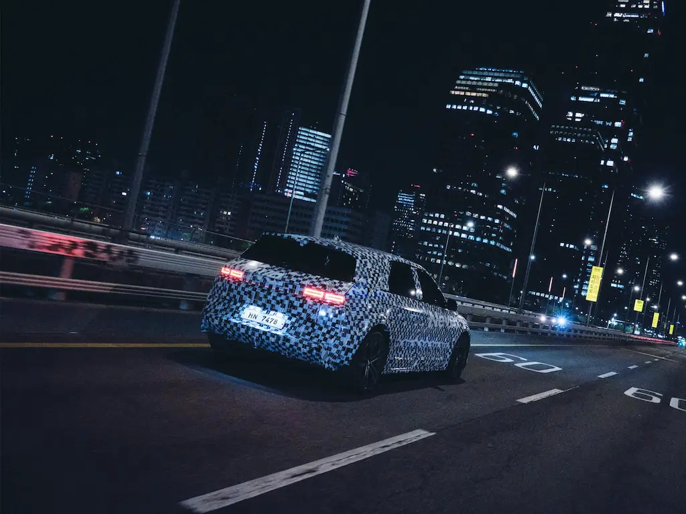

2026 Otomotiv Dünyası: Bizi Hangi Yenilikler Bekliyor?

2026 yılı, otomotiv dünyası için dönüm noktası olacak. Elektrikli araçlar hızla yaygınlaşırken, otonom sürüş teknolojisi Seviye 4’e yaklaşıyor, katı hal bataryalar pazara giriyor ve yapay zeka araçların her köşesine entegre ediliyor.
Bu yazıda, 2026 yılında otomotiv sektöründe bizi bekleyen en önemli yenilikleri, piyasaya çıkacak dikkat çekici modelleri, 2025’e göre farkları ve 2030’a uzanan mobilite vizyonunu detaylı biçimde inceleyeceksiniz.
🎯 2026 Yılı Hedefleri
2026'da Hayatımıza Girecek 10 Büyük Yenilik
1. Katı Hal Bataryalar
Toyota, Mercedes ve BMW 2026’da ilk katı hal bataryalı araçlarını sınırlı da olsa piyasaya sunmaya hazırlanıyor.
- 1000+ km menzil
- 10 dakikada %80 şarj
- 20+ yıl ömür hedefi
- %30–50 daha hafif paketler
- Yangın riskinin ciddi şekilde azalması
2. Seviye 4 Otonom Sürüş
Seçili şehirlerde, belirlenmiş bölgelerde insan müdahalesi olmadan tam otonom sürüş testleri genişliyor.
- Otoyollarda eller serbest sürüş
- Şehir içi otonom taksi hizmetleri
- Otomatik park (valet) sistemleri
- Kaza riskinde %50+ azalma hedefi
- Mercedes, Tesla, Waymo, Çinli markalar önde
3. Hidrojen Yakıt Hücresi
Toyota Mirai, Hyundai Nexo ve BMW iX5 Hydrogen gibi modeller özellikle filo ve ağır ticari tarafta öne çıkıyor.
- 5 dakikada tam dolum
- 600+ km menzil
- Sıfıra yakın emisyon
- Ağır vasıta ve uzun yol için ideal
- Yeni hidrojen istasyon yatırımları
4. Yapay Zeka Asistanları
Doğal dil ile konuşabildiğiniz, kişisel alışkanlıklarınızı öğrenen AI asistanlar neredeyse tüm yeni nesil araçlarda standart oluyor.
- Sesle rota, klima, medya yönetimi
- Sürüş stiline göre öneriler
- Sürekli öğrenen profil tabanlı sistemler
- Bulut üzerinden güncellemeler
- Mercedes MBUX, BMW iDrive 9 gibi platformlar
5. V2X İletişimi
Araçtan araca ve araçtan altyapıya iletişim (V2X) trafik güvenliği ve akışında devreye giriyor.
- Acil fren, kaza uyarı paylaşımı
- Trafik ışığı optimizasyonu
- Boş park yeri bilgisi paylaşımı
- 5G ve sonrasında 6G entegrasyonu
- Akıllı şehir projeleriyle uyum
6. Artırılmış Gerçeklik HUD
Ön cam, navigasyon ve güvenlik bilgilerini artırılmış gerçeklikle yola bindiren dev bir ekrana dönüşüyor.
- Şerit bazlı navigasyon okları
- Hız, uyarı ve trafik işaretleri AR ile
- Gece görüş ve yaya vurgulama
- Holografik gösterge panelleri
- Mercedes, BMW, Audi gibi markaların premium paketlerinde
7. Mega Hızlı Şarj (500kW+)
Üst düzey şarj altyapıları ile 5–10 dakikada uzun menzilli dolum dönemi başlıyor.
- 500kW+ DC şarj istasyonları
- 5 dakikada 200 km menzil kazanımı
- Park alanlarında kablosuz şarj pilotları
- Güneş panelli istasyon konseptleri
- Tesla V4, Ionity ve yeni ağ yatırımları
8. Dijital Kaplama
BMW iX Flow gibi gövde rengi dijital olarak değişebilen araçlar, kişiselleştirmeyi yeni seviyeye taşıyor.
- E-ink bazlı paneller
- Tek tuşla renk/tema değişimi
- Reklam ve kişisel tasarım kullanımı
- Isı yönetimi için açık/koyu mod
- Premium segmentte sınırlı üretim
9. Biyometrik Sistemler
Yüz tanıma, parmak izi ve göz takibi, hem güvenlik hem konfor için yaygınlaşıyor.
- Anahtarsız giriş ve çalıştırma
- Sürücüye özel koltuk/ayna profilleri
- Hırsızlık riskinin düşürülmesi
- Yorgunluk ve dikkat dağınıklığı algılama
- Mercedes, Genesis, Audi gibi markalarda
10. Geri Dönüştürülmüş Malzemeler
İç ve dış malzemelerde geri dönüştürülmüş ve biyobazlı materyaller artık bir pazarlama argümanı değil, standart haline geliyor.
- Okyanus plastiklerinden koltuk kumaşı
- Vegan deri ve geri dönüştürülmüş tekstil
- Bambu, mantar gibi yenilenebilir kaynaklar
- Düşük karbon izli üretim tesisleri
- BMW i Vision Circular gibi konseptler
2026 Yılında Piyasaya Çıkacak Beklenen Modeller
Toyota Solid-State EV
İlk katı hal bataryalı seri üretim araçlardan biri olarak konumlanıyor.
- 1200 km menzil hedefi
- 10 dakikada hızlı şarj
- Yeni nesil batarya platformu
Mercedes EQG
Elektrikli G-Serisi, ikonik off-road karakterini sıfır emisyon ile birleştiriyor.
- 400+ km menzil
- Dört bağımsız elektrik motoru
- Seviye 3 otonom sürüş desteği
BMW iX3 (Yeni Nesil)
Geliştirilmiş menzil ve yazılım altyapısıyla tamamen yenilenen elektrikli SUV.
- 650 km’ye kadar menzil
- 350kW hızlı şarj desteği
- iDrive 9.0 bilgi-eğlence sistemi
Tesla Model 2
Uygun fiyatlı Tesla, kitle pazarı hedefleyen global kompakt EV modeli.
- ~500 km menzil hedefi
- $25.000 seviyesinde başlangıç fiyatı
- Geliştirilmiş FSD özellikleri
Hyundai Ioniq 7
7 koltuklu büyük boy aile odaklı elektrikli SUV modeli.
- 480 km civarı menzil
- E-GMP platformu
- 350kW şarj altyapısı
Togg Sedan
Türkiye’nin ikinci elektrikli modeli ile ürün gamı genişliyor.
- 400+ km menzil seçeneği
- Daha rekabetçi fiyatlandırma
- Yerli yazılım ve bağlantılı hizmetler
2026 Yılı Çeyrek Çeyrek Neler Olacak?
CES 2026 ve İlk Tanıtımlar
CES Las Vegas: BMW, Mercedes ve Sony Honda Mobility yeni elektrikli ve otonom konseptlerini sahneye çıkarıyor.
- BMW iX3 dünya prömiyeri
- Mercedes EQG ön siparişleri açılıyor
- Togg Sedan konsept tanıtımı
- Apple benzeri teknoloji devlerinin otomotiv hamlelerine dair söylentiler
Cenevre ve Şangay Fuarları
Cenevre Otomobil Fuarı: Avrupa markaları yeni jenerasyon elektrikli ve hibrit modellerini yoğun şekilde sergiliyor.
- Audi Q6 e-tron lansmanı
- Porsche Macan Electric satışa çıkıyor
- Volkswagen ID.7 GTX tanıtımı
- BYD ve NIO’nun Avrupa genişleme planları
Toyota Katı Hal Devrimi
Temmuz: Toyota, katı hal bataryalı ilk aracının pilot üretim sürecini ve menzil verilerini detaylandırıyor.
- Toyota Solid-State EV pilot üretim hatları
- Tesla Model 2 ön siparişlerinin açılması (beklenti)
- IAA Münih’te Alman markalarının yeni elektrikli platformları
- Hyundai Ioniq 7 dünya lansmanı
Yılın Son Sürprizi ve 2027 Önizlemesi
LA Auto Show: 2027 model yılı araçların tanıtımları hız kazanıyor.
- Mercedes EQG ilk teslimatlar (seçili müşterilere)
- BMW iX3 Avrupa satış başlangıcı
- Togg Sedan için 2027 üretim takvimi
- 2026 yılının en çok satan elektrikli modellerinin açıklanması
2025 vs 2026: Ne Değişiyor?
Teknoloji Karşılaştırması
2025
Lityum-İyon Batarya
~500 km menzil
30 dakikada %80 şarj (hızlı şarjda)
~500.000 km pil ömrü
Seviye 2–3 otonom sürüş
2026
Katı Hal Batarya
~1000 km menzil (üst segment)
10 dakikada %80 şarj hedefi
1.000.000 km’ye yakın pil ömrü
Seviye 4’e yakın otonom testleri
🚘 Sektörün Yönü: Elektrifikasyon + Zeka
2026 yılı, otomotiv endüstrisinin donanım merkezli yapıdan yazılım ve veri merkezli mimariye geçtiği dönem olarak öne çıkıyor. Araçlar, bağlantılı hizmetler ve güncellemelerle yaşayan birer dijital platforma dönüşüyor.
2030’a Doğru: Otomotivde Bir Sonraki Adım
2026 büyük dönüşümün başlangıç yılı; asıl kırılma ise 2030’a doğru yaşanacak. Elektrikli araçların küresel binek satışlarındaki payının %40 seviyesine yaklaşması, birçok büyük şehirde içten yanmalı motorlu araçlara ciddi kısıtlamalar getirilmesi bekleniyor.
2030’a gelindiğinde, yazılım güncellemeleriyle sürekli gelişen, abonelik modeliyle ek özelliklerin açıldığı ve enerji ekosistemiyle (ev, iş, şebeke) entegre çalışan araçlar norm haline gelecek. Araç sahipliği yerine paylaşım, kısa dönem kiralama ve filo bazlı kullanım modelleri yaygınlaşacak.
Şehir İçi Mobilite: Mikro EV ve Otonom Taksi Çağı
Büyük şehirlerde, 2–3 kişilik mikro EV’ler, elektrikli scooter’lar ve paylaşımlı otonom taksiler, klasik binek otomobillerden daha çok tercih edilen çözümler haline gelmeye başlıyor. Bu sayede hem park alanı ihtiyacı düşüyor hem de trafik yazılım tabanlı sistemlerle daha akıllı yönetiliyor.
Belediyeler ve özel işletmeler, akıllı şarj altyapısı, dinamik fiyatlandırma ve gerçek zamanlı trafik verisini tek çatı altında birleştiren mobilite platformları kuruyor. Otomobil, tek başına bir ürün değil; akıllı şehir ekosisteminin önemli bir bileşeni olarak yeniden tanımlanıyor.
Markalardan 2026 Hamleleri
⚙️Toyota
Katı hal batarya yatırımlarını hızlandırarak 2030’a kadar milyonlarca elektrikli araç satmayı hedefliyor ve hibrit tecrübesini tamamen elektrikli platformlara taşıyor.
⭐Mercedes-Benz
EQG ve yeni nesil CLA EV gibi modellerle lüks segmentte tam elektrikli dönüşümü hızlandırırken, yazılım tabanlı gelir modellerine odaklanıyor.
🔋Tesla
Model 2 ile uygun fiyatlı EV pazarını hedefleyerek rekabeti alt ve orta segmentte kızıştırıyor ve otonom sürüş yazılımını abonelik modeliyle geniş kitlelere sunuyor.
🇹🇷Togg
Yeni sedan modeli ve genişleyen servis/şarj ağı ile hem Türkiye’de hem Avrupa’da marka bilinirliğini artırmayı, üretim kapasitesini ise kademeli olarak büyütmeyi planlıyor.
Sonuç: Gelecek Başladı
2026 yılı, otomotiv tarihine elektrikli, bağlantılı ve zeki araçların gerçek anlamda ana akım haline geldiği dönem olarak yazılacak. Sürücüler, artık sadece araç kullanmayacak; akıllı sistemlerle etkileşime girerek enerji verimliliğini yönetecek ve yolculuklarını uçtan uca dijital bir deneyime dönüştürecek.
Atasayar Oto olarak biz de bu dönüşümü yakından takip ediyor, yeni modelleri, teknolojileri ve piyasaya çıkacak fırsatları sizlerle paylaşmaya devam edeceğiz. 🚘⚡